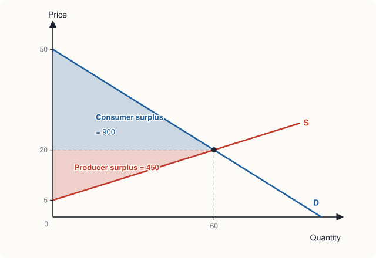
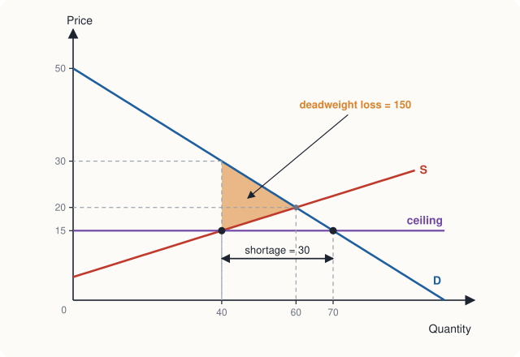
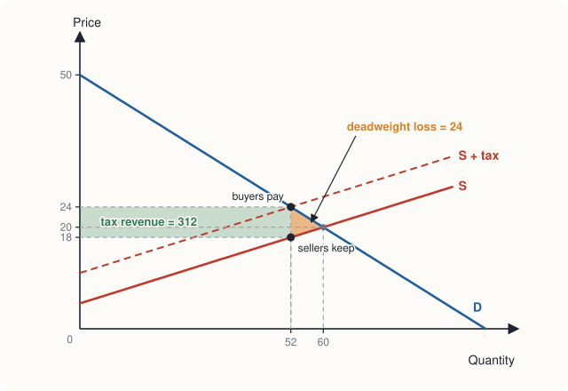

Chapter 4: Markets, Welfare and Government Intervention¶
Consumer and producer surplus, and what taxes, subsidies and price controls do
Learning outcomes
After studying this chapter you should be able to:
- Define willingness to pay and consumer surplus, and measure consumer surplus on a demand curve.
- Define producer surplus and measure it on a supply curve.
- Explain why a competitive equilibrium maximises total surplus, and state the limits of that result.
- Analyse a price ceiling and a price floor: shortages, surpluses and deadweight loss.
- Find the effect of a per-unit tax on prices, quantity, tax revenue and welfare, and explain who bears the tax.
- Analyse a per-unit subsidy in the same way.
- Explain how deadweight loss depends on elasticities and on the size of a tax.
4.1 Willingness to pay and consumer surplus¶
Chapter 2 explained how a market reaches equilibrium. This chapter asks a different question: how well off are buyers and sellers in that equilibrium, and how does government intervention change their well-being? The branch of economics that studies how the allocation of resources affects well-being is called welfare economics. Its basic tools are consumer and producer surplus.
A buyer's willingness to pay for a good is the most she would pay for it: the price at which she would be just indifferent between buying and not buying. If she pays less than her willingness to pay, she gains. Her consumer surplus is the difference:
Example 4.1 Consumer surplus of four buyers
Four students want a second-hand bicycle. Their willingness to pay is: Asha ₹5,000, Bilal ₹4,000, Chitra ₹3,500, Dev ₹2,500. Bicycles of the same kind are on sale at ₹3,000. Who buys, and what is the total consumer surplus?
Solution. Asha, Bilal and Chitra are willing to pay more than ₹3,000, so they buy. Dev is not. Their surpluses are \(5{,}000 - 3{,}000 = 2{,}000\), \(4{,}000 - 3{,}000 = 1{,}000\) and \(3{,}500 - 3{,}000 = 500\) rupees. Total consumer surplus is ₹3,500. If the price fell to ₹2,000, all four would buy and the total would rise to \(3{,}000 + 2{,}000 + 1{,}500 + 500 = 7{,}000\) rupees.
The willingness to pay of the buyers, arranged from highest to lowest, is the demand curve: at any quantity, the height of the demand curve shows the willingness to pay of the marginal buyer, the one who would just stop buying if the price rose a little. So consumer surplus is the area below the demand curve and above the price, up to the quantity bought.
For the market of Chapters 2 and 3, demand is \(P = 50 - \tfrac{1}{2}Q\) and the equilibrium is \(P^* = 20\), \(Q^* = 60\). The area below demand and above the price is a triangle with base 60 and height \(50 - 20 = 30\):
4.2 Cost and producer surplus¶
On the other side of the market, each seller has a cost: the lowest price at which she would be willing to sell, which covers the value of everything she gives up to produce the unit. If she sells for more than this, she gains. Her producer surplus is
The supply curve shows the cost of the marginal seller at each quantity, so producer surplus is the area above the supply curve and below the price. With supply \(P = 5 + \tfrac{1}{4}Q\), it is a triangle with base 60 and height \(20 - 5 = 15\):

4.3 Market efficiency¶
Total surplus is the sum of consumer and producer surplus. It equals the total value that buyers place on the goods minus the total cost of producing them: the net gain to society from the trade. In our market it is \(900 + 450 = 1{,}350\) rupees.
An allocation of resources is efficient if it maximises total surplus. The competitive equilibrium is efficient in this sense, for three reasons.
- The goods go to the buyers who value them most. Everyone who buys has a willingness to pay of at least ₹20; everyone who does not, less than ₹20.
- The goods are produced by the sellers with the lowest costs. Everyone who sells has a cost of at most ₹20.
- The quantity is right. For each unit up to 60, the value to the buyer (the height of the demand curve) exceeds the cost to the seller (the height of the supply curve), so producing it adds to total surplus. For each unit beyond 60, the cost exceeds the value, so producing it would reduce total surplus.
This is the precise meaning of Adam Smith's "invisible hand": buyers and sellers, each pursuing their own interest and guided only by the price, reach the allocation that makes total surplus as large as possible.
The limits of this result
Efficiency is not everything. First, it says nothing about equity: a market can be efficient while some people are very poor, because willingness to pay depends on ability to pay. Second, the result assumes that markets are competitive and that there are no market failures: no pollution or other effects on third parties, no goods that cannot be sold to individuals, and no important differences in information between buyers and sellers. Chapters 9 to 12 study what happens when these assumptions fail. Governments intervene in markets for both reasons, efficiency and equity.
Deadweight loss¶
When an intervention moves the quantity away from the efficient level, some total surplus is lost: trades that would have benefited both a buyer and a seller do not happen. The lost surplus, which nobody gains, is called deadweight loss. The rest of this chapter uses it to measure the cost of price controls, taxes and subsidies.
4.4 Price ceilings¶
A price ceiling is a legal maximum price. Governments impose ceilings to make goods affordable: controls on the rents of flats, on the prices of essential medicines, on the prices of food grains or fuel at times of scarcity. A ceiling set above the equilibrium price has no effect, because the market price is already lower. A ceiling set below the equilibrium price is binding.
Suppose the government fixes a ceiling of ₹15 in our market, where the equilibrium price is ₹20.
- Quantity demanded at ₹15: \(100 - 2(15) = 70\).
- Quantity supplied at ₹15: \(-20 + 4(15) = 40\).
- There is a shortage of \(70 - 40 = 30\) units.
Only 40 units are now produced, and at that quantity buyers would be willing to pay \(50 - \tfrac{1}{2}(40) = 30\) rupees for the last unit.

Who gains and who loses¶
Assume for the moment that the 40 units go to the buyers who value them most.
- Consumer surplus becomes the area below demand and above ₹15, up to 40 units: a triangle \(\tfrac{1}{2} \times 40 \times (50 - 30) = 400\) plus a rectangle \(40 \times (30 - 15) = 600\), a total of ₹1,000. Buyers who still get the good gain from the lower price; buyers who no longer get it lose.
- Producer surplus becomes the triangle above supply and below ₹15: \(\tfrac{1}{2} \times 40 \times (15 - 5) =\) ₹200, down from ₹450.
- Total surplus falls from ₹1,350 to ₹1,200. The deadweight loss is ₹150, the triangle between demand and supply from 40 to 60 units: \(\tfrac{1}{2} \times 20 \times (30 - 15) = 150\).
So in this example consumers as a group gain ₹100, producers lose ₹250, and ₹150 is lost altogether.
The hidden costs of a ceiling¶
The calculation above is the best case, because it assumes the scarce goods go to those who value them most. In practice, with a shortage, something other than price must decide who gets the good:
- queues, in which buyers waste time, so that part of the gain from the low price is used up in waiting;
- rationing by the government, with ration cards or quotas, which may give the good to buyers who value it less than others who go without;
- favouritism and bribery, as sellers choose their buyers;
- black markets, in which the good is resold illegally at a higher price;
- falling quality, as sellers save costs in ways the law does not control. A landlord whose rent is controlled has little reason to repair the building.
In the long run supply is usually more elastic than in the short run (Chapter 3), so the shortage caused by a ceiling grows over time. This is why economists often argue that rent control, while it helps sitting tenants, reduces the quantity and quality of rented housing. A government that wants to help poor buyers can often do so at lower cost through direct transfers of income or vouchers, which do not create shortages.
4.5 Price floors¶
A price floor is a legal minimum price. It is binding if it is set above the equilibrium price. Examples include minimum wages (Chapter 11) and guaranteed minimum prices for farm products.
Suppose a floor of ₹25 is set in our market.
- Quantity demanded at ₹25: \(100 - 50 = 50\).
- Quantity supplied at ₹25: \(-20 + 100 = 80\).
- There is a surplus of \(80 - 50 = 30\) units.
If nothing else is done, only 50 units are sold (buyers cannot be made to buy more), and sellers are left with unsold goods. If the 50 units are produced by the lowest-cost sellers, total surplus falls by a deadweight loss of \(\tfrac{1}{2} \times (60 - 50) \times (25 - 17.5) = 37.5\) rupees, where ₹17.5 is the supply price of the 50th unit, \(5 + 50/4\). In practice the loss is larger, because sellers produce the extra 30 units in the hope of selling them, and their cost is wasted.
Often the government supports the floor by buying the surplus. At ₹25, buying 30 units costs the government \(30 \times 25 = 750\) rupees. The goods must then be stored, given away, sold abroad or destroyed, each of which has further costs. Schemes that guarantee a minimum price to farmers and procure grain at that price, such as those used in India for some crops, raise farmers' incomes and support food distribution, but they also face these trade-offs: large stocks, storage costs, and an incentive to grow the supported crops rather than others.
Key idea
A binding ceiling (below equilibrium) causes a shortage; a binding floor (above equilibrium) causes a surplus. Both reduce the quantity traded below the efficient level and create a deadweight loss. Both transfer surplus between buyers and sellers, which is usually their purpose.
4.6 Taxes¶
Governments tax goods to raise revenue and sometimes to discourage consumption (of tobacco, for example). Here we study a per-unit tax (also called a specific tax): a fixed number of rupees for each unit sold.
A tax on sellers¶
Suppose the government levies a tax of ₹6 on each unit, collected from sellers. A seller who needed ₹20 to supply a unit before the tax now needs ₹26, because ₹6 goes to the government. So the supply curve, as buyers see it, shifts up by the amount of the tax: from \(P = 5 + \tfrac{1}{4}Q\) to \(P = 11 + \tfrac{1}{4}Q\). This is exactly the shift we met in Chapter 2.
The new equilibrium is where demand meets the shifted supply:
- Price paid by buyers: \(P_b = 50 - \tfrac{1}{2}(52) = 24\).
- Price kept by sellers: \(P_s = P_b - 6 = 18\). (Check on the original supply curve: \(5 + 52/4 = 18\).)
- Quantity falls from 60 to 52.
- Tax revenue is \(6 \times 52 = 312\) rupees.

Welfare effects of the tax¶
| Before the tax (₹) | After the tax (₹) | Change (₹) | |
|---|---|---|---|
| Consumer surplus | \(\tfrac{1}{2} \times 60 \times 30 = 900\) | \(\tfrac{1}{2} \times 52 \times 26 = 676\) | −224 |
| Producer surplus | \(\tfrac{1}{2} \times 60 \times 15 = 450\) | \(\tfrac{1}{2} \times 52 \times 13 = 338\) | −112 |
| Tax revenue | 0 | 312 | +312 |
| Total surplus | 1,350 | 1,326 | −24 |
Table 4.1. Who gains and who loses from a tax of ₹6 per unit.
Buyers and sellers together lose \(224 + 112 = 336\) rupees; the government gains ₹312. The difference, ₹24, is the deadweight loss: the triangle between demand and supply from 52 to 60 units, \(\tfrac{1}{2} \times 6 \times (60 - 52) = 24\). It represents the 8 units that would have been traded without the tax, each worth more to a buyer than it cost a seller to produce, which the tax prevents.
Who really pays the tax?¶
The law said the sellers must pay the tax. But the buyers' price rose from ₹20 to ₹24, so buyers bear ₹4 of each ₹6; the sellers' price fell from ₹20 to ₹18, so sellers bear ₹2. The division of a tax burden is called its incidence, and the lesson is that the incidence of a tax does not depend on who is legally required to pay it.
To see this, suppose instead the tax were collected from buyers. Each buyer would now be willing to pay the seller ₹6 less than before, so the demand curve, as sellers see it, shifts down by ₹6, to \(P = 44 - \tfrac{1}{2}Q\). Setting \(44 - \tfrac{1}{2}Q = 5 + \tfrac{1}{4}Q\) gives \(Q = 52\) again; sellers receive \(5 + 13 = 18\) and buyers pay \(18 + 6 = 24\). Exactly the same outcome.
What does decide the incidence is the elasticities of demand and supply. The side of the market that is less elastic bears more of the tax, because it is less able to escape it by changing its behaviour. At the original equilibrium the price elasticity of demand is \(-2 \times 20/60 = -0.67\) and the price elasticity of supply is \(4 \times 20/60 = 1.33\). A useful approximation is
which is exactly the ₹4 out of ₹6 we found. (The formula is exact for straight-line curves, as here.)
Example 4.2 A tax on a good with inelastic demand
The demand for cigarettes in a town is \(Q_d = 100 - P\) and the supply is \(Q_s = 4P - 100\), with prices in rupees per packet and quantities in hundreds of packets a week. A tax of ₹10 per packet is imposed on sellers. Find the prices paid and received, the tax revenue and the deadweight loss. Who bears most of the tax?
Solution. Before the tax: \(100 - P = 4P - 100\) gives \(P = 40\), \(Q = 60\).
With the tax, sellers need ₹10 more for each quantity, so supply becomes \(Q_s = 4(P - 10) - 100 = 4P - 140\). Setting \(100 - P = 4P - 140\) gives \(5P = 240\), so buyers pay \(P_b = 48\) and \(Q = 52\). Sellers keep \(48 - 10 = 38\).
Revenue is \(10 \times 52 = 520\) (hundred rupees). Deadweight loss is \(\tfrac{1}{2} \times 10 \times (60 - 52) = 40\).
Buyers bear ₹8 of the ₹10 and sellers ₹2. At the old equilibrium \(E_d = -1 \times 40/60 = -0.67\) and \(E_s = 4 \times 40/60 = 2.67\), so buyers bear \(2.67/(2.67 + 0.67) = 0.8\) of the tax. Because demand is the less elastic side, buyers bear most of it.
4.7 Subsidies¶
A per-unit subsidy is a negative tax: the government pays a fixed sum for each unit sold. Governments subsidise goods such as fertiliser, cooking gas, public transport and renewable energy, to make them cheaper or to encourage their use.
A subsidy of ₹3 per unit paid to sellers shifts the supply curve down by ₹3, from \(P = 5 + \tfrac{1}{4}Q\) to \(P = 2 + \tfrac{1}{4}Q\):
Buyers pay \(50 - 32 = 18\) rupees, and sellers receive \(18 + 3 = 21\) rupees (check: \(5 + 64/4 = 21\)). The government pays \(3 \times 64 = 192\) rupees.
- Consumer surplus rises from ₹900 to \(\tfrac{1}{2} \times 64 \times 32 = 1{,}024\), a gain of ₹124.
- Producer surplus rises from ₹450 to \(\tfrac{1}{2} \times 64 \times 16 = 512\), a gain of ₹62.
- The subsidy costs the government ₹192, more than the combined gain of ₹186.
The difference, ₹6, is the deadweight loss of the subsidy: \(\tfrac{1}{2} \times 3 \times (64 - 60) = 6\). It arises because the subsidy encourages 4 units to be produced whose cost to society (the height of the supply curve) is greater than their value to buyers (the height of the demand curve). As with a tax, the benefit of the subsidy is shared between buyers and sellers according to elasticities: here buyers get ₹2 of each ₹3 (their price falls from ₹20 to ₹18) and sellers ₹1.
Note: when subsidies and taxes improve efficiency
The deadweight losses in this chapter arise because the market, left alone, was already efficient. When a market fails, for instance because production causes pollution or because a good such as vaccination benefits people other than the buyer, a well-designed tax or subsidy can increase total surplus. Chapter 12 shows how.
4.8 How big is the deadweight loss?¶
The deadweight loss of a tax depends on two things.
Elasticities. The deadweight loss arises because the tax changes behaviour: it reduces the quantity traded. If demand or supply is very inelastic, the quantity hardly changes and the deadweight loss is small. If both are elastic, the quantity falls a lot and the loss is large. This is one reason governments tax goods with inelastic demand, such as fuel, tobacco and alcohol: they raise much revenue with little distortion. (Whether such taxes are fair is a separate question, since many of these goods take a larger share of the budgets of poorer households.)
The size of the tax. For straight-line curves, the deadweight loss is a triangle whose base (the fall in quantity) and height (the tax) both grow in proportion to the tax. So doubling a tax roughly quadruples its deadweight loss. In our market, a tax of ₹12 would reduce the quantity to 44 (buyers pay ₹28, sellers keep ₹16), raise revenue of \(12 \times 44 = 528\) rupees, and cause a deadweight loss of \(\tfrac{1}{2} \times 12 \times 16 = 96\) rupees, four times the loss from a tax of ₹6.
| Tax per unit (₹) | Quantity | Revenue (₹) | Deadweight loss (₹) |
|---|---|---|---|
| 0 | 60 | 0 | 0 |
| 6 | 52 | 312 | 24 |
| 12 | 44 | 528 | 96 |
| 18 | 36 | 648 | 216 |
| 24 | 28 | 672 | 384 |
| 30 | 20 | 600 | 600 |
Table 4.2. Revenue and deadweight loss for taxes of different sizes in the market of this chapter.
Table 4.2 also shows that revenue first rises with the tax and then falls: a very high tax shrinks the market so much that it raises less money. Revenue is greatest at a tax of ₹22.50 in this market, where the quantity is 30 and revenue is \(22.5 \times 30 = 675\) rupees. This is why economists generally prefer taxes with a broad base and low rates to taxes with a narrow base and high rates.
4.9 Summary¶
- Consumer surplus is willingness to pay minus price: the area below the demand curve and above the price. Producer surplus is price minus cost: the area above the supply curve and below the price.
- Total surplus is maximised at the competitive equilibrium, provided markets are competitive and there are no market failures. Efficiency says nothing about equity.
- Deadweight loss is the fall in total surplus when the quantity traded moves away from the efficient level.
- A binding price ceiling creates a shortage and a deadweight loss, and leads to queues, rationing, black markets and lower quality. A binding price floor creates a surplus and a deadweight loss, and often requires the government to buy the surplus.
- A per-unit tax drives a wedge between the price buyers pay and the price sellers keep, reduces the quantity, raises revenue, and causes a deadweight loss.
- The incidence of a tax does not depend on who legally pays it. The less elastic side of the market bears more of it.
- A per-unit subsidy lowers the price buyers pay and raises the price sellers receive; it costs the government more than the gain to buyers and sellers.
- Deadweight loss is larger when demand and supply are more elastic, and grows roughly with the square of the tax.
4.10 Exercises¶
Exercise 1
Demand is \(P = 80 - Q\) and supply is \(P = 20 + Q\). Find the equilibrium, the consumer surplus, the producer surplus and the total surplus.
Answer
\(80 - Q = 20 + Q\) gives \(Q^* = 30\) and \(P^* = 50\). \(CS = \tfrac{1}{2} \times 30 \times (80 - 50) =\) 450. \(PS = \tfrac{1}{2} \times 30 \times (50 - 20) =\) 450. Total surplus = 900.
Exercise 2
In the market of Exercise 1, a price ceiling of ₹40 is imposed. Find the shortage and the deadweight loss.
Answer
At ₹40: \(Q_d = 80 - 40 = 40\), \(Q_s = 40 - 20 = 20\). Shortage = 20 units. Only 20 are traded; the demand price at \(Q = 20\) is \(80 - 20 = 60\). Deadweight loss \(= \tfrac{1}{2} \times (30 - 20) \times (60 - 40) =\) 100.
Exercise 3
In the market of Exercise 1, a tax of ₹10 per unit is imposed on sellers. Find the price buyers pay, the price sellers keep, the tax revenue and the deadweight loss. How is the tax shared?
Answer
Supply becomes \(P = 30 + Q\). \(80 - Q = 30 + Q\) gives \(Q = 25\), \(P_b = 55\), \(P_s = 45\). Revenue \(= 10 \times 25 =\) 250. Deadweight loss \(= \tfrac{1}{2} \times 10 \times 5 =\) 25. Buyers bear ₹5 and sellers ₹5: the curves have slopes of equal size, so the burden is shared equally.
Exercise 4
Explain why the incidence of a tax on a life-saving medicine with very inelastic demand falls mainly on patients, whatever the law says about who pays it.
Answer
Patients cannot easily reduce the quantity they buy when the price rises, so sellers can pass the tax on in a higher price without losing many sales. The less elastic side of a market bears more of a tax, and here that is the buyers. Writing the law so that sellers pay it does not change this, because the price adjusts.
Exercise 5
A government sets a minimum price of ₹30 for a crop whose market has demand \(Q_d = 120 - 2P\) and supply \(Q_s = 3P - 30\). Find the equilibrium without the floor, the surplus at the floor, and the cost to the government of buying the surplus.
Answer
Without the floor: \(120 - 2P = 3P - 30\), so \(P = 30\) and \(Q = 60\). The floor of ₹30 equals the equilibrium price, so it is not binding: there is no surplus and no cost. (A floor of, say, ₹35 would give \(Q_d = 50\), \(Q_s = 75\), a surplus of 25 costing \(25 \times 35 = 875\) rupees.)
Exercise 6
Using the market of this chapter, show that a subsidy of ₹6 per unit causes a deadweight loss four times as large as a subsidy of ₹3.
Answer
With a ₹6 subsidy, supply becomes \(P = -1 + \tfrac{1}{4}Q\). \(50 - \tfrac{1}{2}Q = -1 + \tfrac{1}{4}Q\) gives \(Q = 68\). The deadweight loss is \(\tfrac{1}{2} \times 6 \times (68 - 60) =\) 24, which is four times the ₹6 loss from the ₹3 subsidy.
Exercise 7
Why might rent control cause a larger shortage after ten years than after one year?
Answer
Both demand and supply become more elastic over time. In one year the stock of flats is nearly fixed, so the quantity supplied falls little. Over ten years, landlords convert flats to other uses, fail to maintain them, and build fewer new ones, while more people seek flats at the low controlled rent. The gap between quantity demanded and quantity supplied at the ceiling therefore widens.
4.11 Quiz¶
Check your understanding of Chapter 4
Exercise 1
A buyer is willing to pay ₹900 for a pair of shoes and buys them for ₹650. What is her consumer surplus, in rupees?
Answer
250 / ₹250
Exercise 2
Consumer surplus is shown on a diagram as the area
- above the supply curve and below the price
- below the demand curve and above the price
- between the demand and supply curves beyond equilibrium
- under the supply curve
Answer
below the demand curve and above the price
Exercise 3
A binding price ceiling is one set
- above the equilibrium price, causing a surplus
- below the equilibrium price, causing a shortage
- above the equilibrium price, causing a shortage
- at the equilibrium price
Answer
below the equilibrium price, causing a shortage
Exercise 4
A tax is imposed on a good whose supply is very elastic and whose demand is very inelastic. The tax is borne
- mainly by sellers
- mainly by buyers
- equally
- by whoever the law says must pay it
Answer
mainly by buyers
Exercise 5
A tax of ₹4 per unit reduces the quantity traded from 100 to 90. What is the deadweight loss, in rupees (straight-line curves)?
Answer
20 / ₹20
Half of 4 times 10.
Exercise 6
If a tax per unit is doubled, the deadweight loss (with straight-line curves) becomes
- half as large
- the same
- twice as large
- about four times as large
Answer
about four times as large
Exercise 7
Whether a tax is collected from buyers or from sellers
- changes the price buyers pay but not the quantity
- makes no difference to the prices paid and received or to the quantity
- determines who bears the burden
- determines the deadweight loss
Answer
makes no difference to the prices paid and received or to the quantity